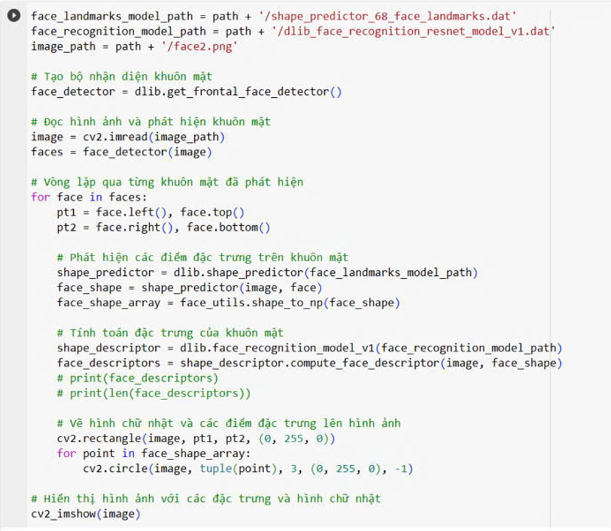
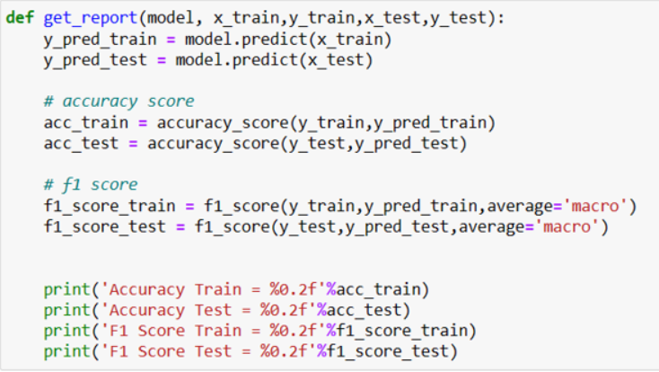
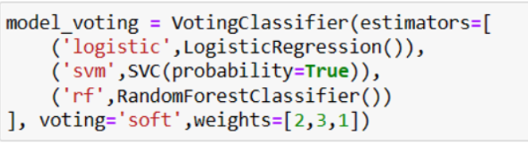
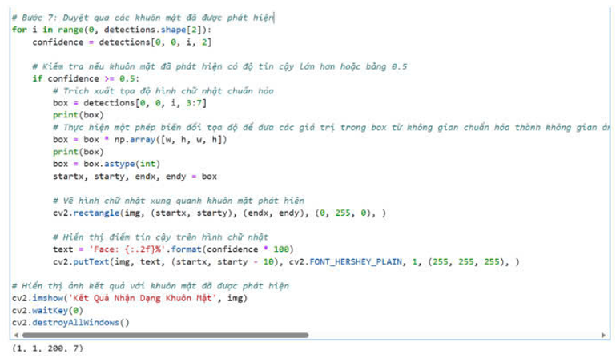
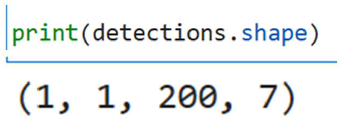

Tại sao thư viện NumPy được coi là cải thiện hiệu suất trong xử lý dữ liệu số học so với việc sử dụng
list Python thông thường?
Biểu đồ hình tròn (pie chart) thường được sử dụng để
Biểu đồ histogram của ảnh xâm thể hiện gì?
Kết nổi các hàm và ý nghĩa tương ứng trong thư viện numpy
Khi bạn thực hiện lệnh sau trong NumPy np.linspace(0, 15, nun=6) giá
trị của a là gì?
Thư viện Pillow trong Python chủ yếu được sử dụng để làm gì?
Cân bằng lược đồ ảnh xám trong xử lý ảnh có ý nghĩa gì?
Để kết nối hai măng NumPy với cùng số chiều, bạn thường sử dụng hàm _____()?
(viết tên hàm, viết thường, không có khoảng trắng, không có phần ngoặc đơn)
Khi chuyển một hình ảnh từ ảnh màu (RGB) sang ảnh xám, điều gì là đúng về việc này? (Chọn tất cả những
câu trả lời đúng)
Trong đoạn mã Python sau
def get_image_list(folder_path):
image_list = []
if os.path.exists(folder_path) and os.path.isdir(folder_path):
filenames = os.listdir(folder_path)
for filename in filenames:
file_path = os.path.join(folder_path, filename)
if os.path.isfile(file_path) and is_image_file(file_path):
load_image(file_path)
image_list.append(img)
return image_list
Hàm get_image_list thực hiện việc gì?
Hãy chọn lựa hàm và ý nghĩa của nó khi sử dụng thư viện Numpy
Hãy chọn lựa phát biểu đúng về ngôn ngữ lập trình Python?
Trong thư viện Pillow, hàm resize và hàm thumbnail được sử dụng để thay đổi kích thước của một hình ảnh.
Tuy nhiên, điểm khác biệt quan trọng giữa chúng là gì?
Mặt na Sobel và Prewitt thường được sử dụng trong xử lý ảnh để
Trong OpenCV, để thu nhận hình ảnh từ webcam, bạn sử dụng hàm nào?
Trong thư viện OpenCV, hàm nào được sử dụng để đóng tất cả các cửa số hiển thị?
Giả sử chúng ta muốn cắt một vùng hình chữ nhật từ hình ảnh của mình, bắt đầu từ x=1, y=48 và kết thúc
tại x=80, y=69. Dòng mã đúng để thực hiện việc cắt này là gì?
FPS (Frames Per Second) là gì và chức năng của nó?
(Điền vào chỗ trống, các ô chỉ chứa 1 từ, viết thường, không có khoảng trắng)
Một hình ảnh có độ phân giải 1920x1080 có tổng công 1920 pixel theo chiều
và 1080 pixel theo chiều
Thư viện SciPy được xây dựng trên nền tảng nào?
Lựa chọn phát biểu đúng nhất về video
Trong thư viện OpenCV, hàm cv2.namedWindow() được sử dụng để làm gì?
Trong thư viện OpenCV, hàm split được sử dụng để làm gì?
Trong thư viện OpenCV, khi bạn đã kết thúc việc sử dụng webcam hoặc thiết bị ghi hình và muốn giải phóng
tài nguyên, hàm nào được sử dụng để thực hiện điều này? Cho biết "camera" là tên biến đang chiếm dụng
Hãy kết hợp đúng giữa các hàm và mô tả chức năng tương ứng của chúng, img là tên biến chứa hình ảnh
Hãy kết hợp đúng giữa các hàm về hình ảnh và mô tả chức năng tương ứng của chúng trong thư viện OpenCV

Mô hình nhận diện khuôn mặt ResNet của Dlib được sử dụng để làm gì trong đoạn mã?
Các tham số như scalefactor, , và minsize trong hàm detectMultiScale được sử dụng để làm gì?
Hàm cv2.rectangle được sử dụng để làm gì?
Sau khi xác định được các vùng chứa khuôn mặt, chúng ta cần sử dụng những hàm nào để lấy được tọa độ của
gốc trải bên trên vùng nhận diện khuôn mặt?
point_a = face____(),
face____()
(Viết chữ thường, không chứa khoảng trắng)
Bài toán phát hiện khuôn mặt trong thị giác máy tính liên quan đến việc gì chính?
Trong Dlib, mô hình nhận diện khuôn mặt ResNet được sử dụng để tính toán đặc trưng của khuôn mặt. Mỗi
vector đặc trưng có bao nhiều giá trị số thực?
Caffe (Convolutional Architecture for Fast Feature Embedding) là gì?
OpenCV Deep Neural Network (DNN) là gì?
Deep Learning trong trí tuệ nhân tạo (AI) là gì?
Hàm cv2.dnn.blobFromImage() được sử dụng để làm gì?
Google Colab hỗ trợ các môi trường lập trình nào sau đây?
Random Forest thuộc loại nào trong các thuật toán học mày sau đây?
Thuật toán học máy nào chủ yếu được sử dụng cho các bài toán phân loại và hồi quy, tập trung vào việc
tìm ra ranh giới phân chia tốt nhất giữa các lớp dữ liệu và sử dụng các điểm dữ liệu quan trọng?
Hàm get_report được sử dụng để đánh giá hiệu suất của mô hình học máy. Hãy chọn câu trả lời đúng về mục
đích và đầu ra của hàm này

Trong mô hình Voting Classifier được xây dựng với đoạn mã Python trên, loại chiến lược bầu chọn nào được
sử dụng?

Logistic Regression thường được sử dụng để giải quyết bài toán nào trong các lựa chọn sau đây?
Hãy kết hợp đúng giữa các hàm về hình ảnh và mô tả chức năng tương ứng của chúng trong thư viện OpenCV
Để thực hiện thao tác training dữ liệu, chúng ta sử dụng hàm nào?
#Support Vector Machines
model_svc SVC(probability=True)
model_svc._____(x_train, y_train)
(Viết thường, không có khoảng trắng)
Haar Cascade là một phương pháp nhận dạng đặc trưng dựa trên máy học (machine learning). Được phát triển
bởi các nhà nghiên cứu Viola và Jones vào năm nào?
Tại sao hình ảnh được chuyển đổi sang dạng đen trắng (grayscale) trước khi thực hiện nhận dạng khuôn
mặt?
PyTorch được phát triển bởi đội ngũ nào?
Hãy ghép nối tên và ý nghĩa của các kỹ thuật được sử dụng trong bài toán nhận diện khuôn mặt:

Tham số confidence được sử dụng để làm gì trong vòng lặp for?

Độ tin cậy được lưu trữ trong phần nào trong 4 chỉ số bên trên
Điểm đặc trưng trong lĩnh vực thị giác máy tính thường được sử dụng để
Để kết nối Google Colab với Google Drive và truy cập dữ liệu từ Drive, người lập trình sử dụng thư viện
nào và hàm nào sau đây?
Hãy sắp xếp thứ tự các bước trong Phát hiện ra các điểm đặc trưng trên khuôn mặt:
Hãy ghép nối các bước trong một dự án thị giác máy tính phục vụ cho việc nhận dạng khuôn mặt?